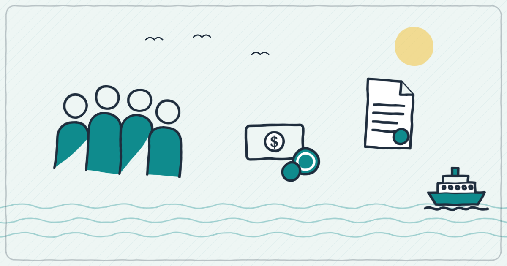

Can You Negotiate a Cruise Group Rate? What Really Moves

You can negotiate a cruise group booking, but not the fare itself. Lines price fares centrally, so push on the extras: a better free-berth ratio, more onboard credit, a private reception, smaller or later deposits, and a reprice clause if public fares fall. Fifteen or more deposited cabins on a sailing the line needs to fill carry real leverage.
Yes, within limits. The fare on a group cruise is set by the line's revenue system and seldom drops in a negotiation, but almost everything wrapped around it can be improved: how many berths come free, how much onboard credit each cabin gets, whether you get a private reception, how small the deposits are and how late the names can arrive. Your bargaining power is the number of cabins with money down, and how badly the line wants that particular week filled.
Why won't the cruise line lower the group fare?
Cruise pricing is run by the same yield systems that price airline seats. A group desk agent cannot type in a lower number; what they can do is hand out things that cost the line less than a fare cut would. A free berth on a ship that would otherwise sail with an empty bed costs very little. Onboard credit is spent in the line's own bars and shops. A cocktail party uses a lounge that sits empty on a sea day.
So experienced organisers stop arguing about dollars off and start listing extras. First, know the baseline: the 8-cabin rule and what a standard group gets covers tour conductor credit and amenity points, which are the starting point for everything below.
What is actually negotiable on a group cruise booking?
| What you ask for | Chance of a yes | Why it works |
|---|---|---|
| A lower fare | Low | Set centrally, not by the group desk |
| A better free-berth ratio (1 per 12 instead of 1 per 16) | Good at 15+ cabins | Empty beds cost the line nothing |
| Extra onboard credit per cabin | Good | Spent back on board |
| A private reception or meeting room | Fair, better on sea days | Lounges are idle in the afternoon |
| Smaller or refundable deposits | Fair | Costs the line nothing if you sail |
| Later name and final-payment dates | Fair | Helps a loose group commit |
| Recall date pushed back | Fair on soft sailings | Keeps your block intact longer |
| Repricing if public fares fall | Worth asking every time | Many desks allow it before final payment |
| An upgrade for the organiser | Low to fair | More realistic on large blocks |
Treat the middle column as a guide, not a promise. A Christmas week on a new ship says no to nearly everything; a May Alaska sailing or an early-December Caribbean week may say yes to most of it.
How big does a group need to be to have leverage?
Standard group terms kick in at eight cabins or sixteen paying guests on most big lines, and the free berth usually arrives at one per sixteen full-fare guests (one per fifteen at Carnival and MSC, one per ten cabins at Virgin Voyages). That baseline is published, not negotiated.
Leverage begins where the block becomes a noticeable share of the ship's unsold inventory for that week. At 15 to 20 cabins you can ask for a second amenity, a reception, or a better ratio on the first free berth. At 25 to 40 cabins the group desk may bring in a manager, and accelerated ratios, several hundred dollars of credit per cabin and flexible deposits all become realistic. At 50 cabins and up you are a serious partner on a big ship and near charter territory on a small one; expect custom terms rather than the published grid.
When is the best time to negotiate a group cruise?
Twelve to eighteen months before sailing, on a date the line is unsure about, while the desk still has inventory to play with and the public fare has not climbed.
The sailings with room to move are the ones the line worries about filling: Caribbean weeks in early December, late April and May; Alaska in May and September; transatlantic and other repositioning voyages. The ones with no room are March break, Christmas and New Year, July and August in Alaska, and a new ship's first season.
How do you negotiate a cruise group rate, step by step?
- Count real cabins, not interest. Collect refundable deposits or signed commitments from your people first. "Twelve cabins paid" carries weight; "maybe thirty people" does not.
- Shortlist two or three sailings on one or two lines, with the same length and similar itineraries, so the quotes can be compared.
- Ask for written group quotes showing fares by cabin category, the free-berth ratio, amenities, deposit amount and timing, name deadline, final payment date, recall date and cancellation terms.
- Total the package, not the fare. Add every perk in dollars, divide by cabins, and compare that figure across the quotes.
- Make specific asks. "One free berth per 12 rather than 16. US$50 credit per cabin. A one-hour reception on the first sea day." Vague requests get vague answers.
- Ask the reprice question out loud. "If a public promotion beats our group fare before final payment, can we move to it, and what do we lose?"
- Get every yes into the contract. An email from a group agent is not a term.
What to say when the first answer is no
Ask what the desk can do instead. A refused ratio often turns into extra credit; a refused reception becomes a hosted lunch. Then ask whether a different week on the same ship would unlock the original request. Flexibility on dates is the organiser's strongest card.
Group rate or public sale: which is cheaper?
Sometimes the public sale. Lines run promotions that bundle drinks, wifi and tips, and group fares often cannot be combined with them. On a seven-night Caribbean cruise a drinks package alone is worth US$400–600 a person at recent prices, which swamps a US$50 credit.
Group fares are usually quoted in US dollars. Some lines will price a Canadian group in CAD on request; whether that is good value depends on the rate quoted against paying in CAD or USD for a cruise at the time.
What happens if the group shrinks after you sign?
The contract sets dates by which unsold cabins go back to the line, typically 90 to 150 days before sailing depending on the line and cruise length. Miss a name deadline and the block shrinks on its own. Lose a couple of cabins and you can drop below the threshold for a free berth, which the line will then withdraw.
Negotiate for this on day one: ask for the latest possible recall date, whether a late-named cabin can rejoin at the group fare if space remains, and what happens to amenities if the count falls.
Should you negotiate direct or through an agent?
Every line has a group desk, and you can call it yourself. Agencies that book groups all year know which lever each line tends to pull, and some add their own amenity on top of the line's. The core perks come from the line either way, so the real question is whether you want to run the contract, the deadlines and twenty people's payments yourself.
For a group seating plan once the booking is done, how to keep a large group at one table is the next job on the list.
Want this checked for your own sailing? A licensed cruise consultant can price it up and answer questions for free, with no obligation.
Ask a cruise expert →The organiser's rule of thumb
Treat the fare as fixed and spend your effort on the ratio, the credit, the deposits and the reprice clause. Written into the contract, those four usually save a group more than any fare discount the desk could have given, and they protect you when half your travellers are slow to pay.
Still wondering?
Can you negotiate the price of a group cruise?
Rarely the headline fare. What moves is the package around it: extra complimentary berths, onboard credit per cabin, private events, deposit size and the dates by which names are due. Bigger, firmer groups on off-peak sailings get the most.
How many cabins do you need before a cruise line will negotiate?
Eight cabins opens a standard group with standard perks. Meaningful negotiation usually starts around 15 to 20 deposited cabins, when the line can see a sizeable, certain booking rather than a hopeful headcount.
What should be written into a group cruise contract?
The fare by category, the free-berth ratio, every amenity promised, deposit amounts and dates, the name and final payment deadlines, the recall date for unsold cabins, the cancellation terms and any agreement to reprice if a lower public fare appears.